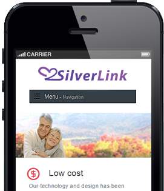
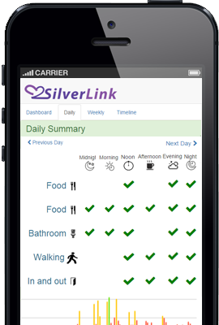
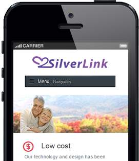
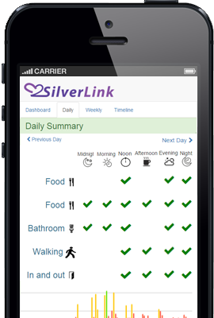

价格合理
体验我们的家庭健康监测系统和服务，每天只要6块钱。
体验我们的家庭健康监测系统和服务，每天只要6块钱。
您的隐私和舒适性是我们的设计时的首要考虑。我们的传感器设计轻巧优雅，安装简易，融合居家环境，您甚至不会注意到它们的存在。
SilverLink为您提供365天24小时年中无休的服务。让您时刻了解亲友家人的居家行为，如用药时间， 用餐次数，出门返家状况等等。
SilverLink将让您通过一个用户友好的门户网站了解您的家人的居家活动。在检测到紧急情况时，它也将发送警示通知给您。
我们不仅监测日常活动，还提供先进的分析，健康进程监测和摔倒风险预测。
SilverLink团队将帮助您设置安装您的家庭监测系统。操作过程非常简单！无需互联网连接。